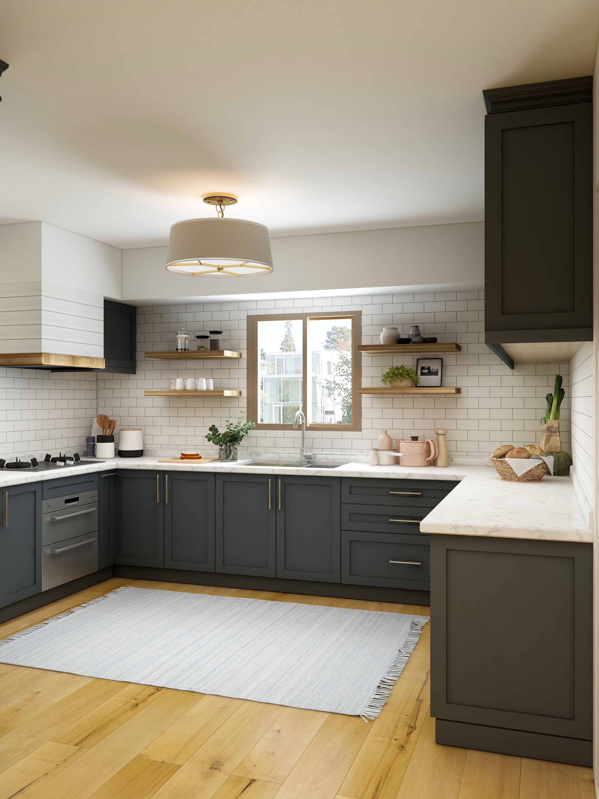
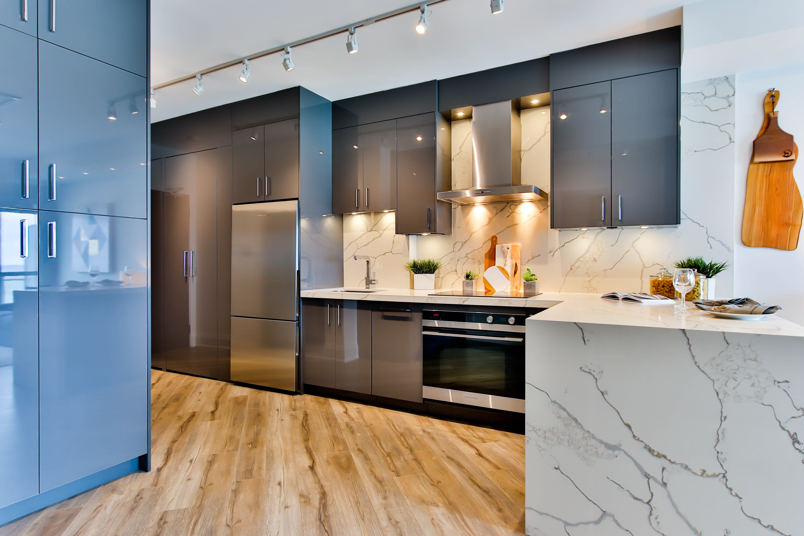
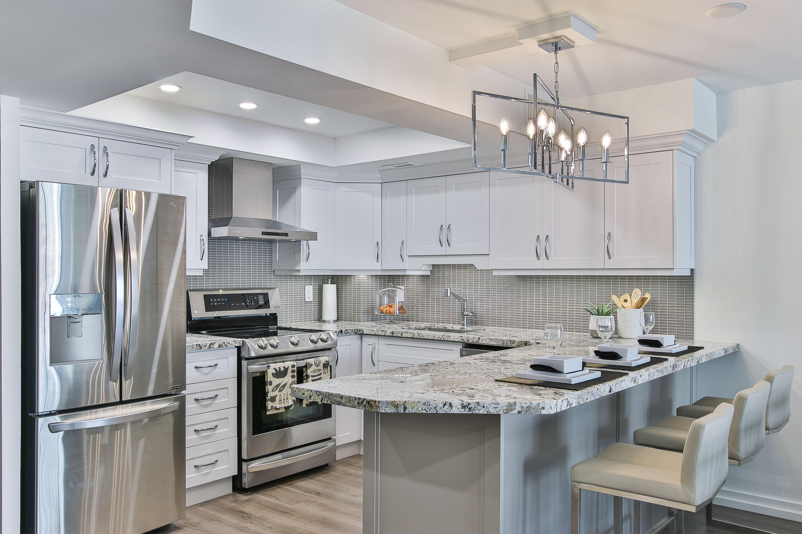

ORION
Amoblamientos
Nosotros
Materiales
Premium


Excelentes acabados mate y brillantes que complementan perfectamente con el diseño completo de la cocina.
Vintage

Tonos cálidos predominantes que te transportan a ciertas épocas.